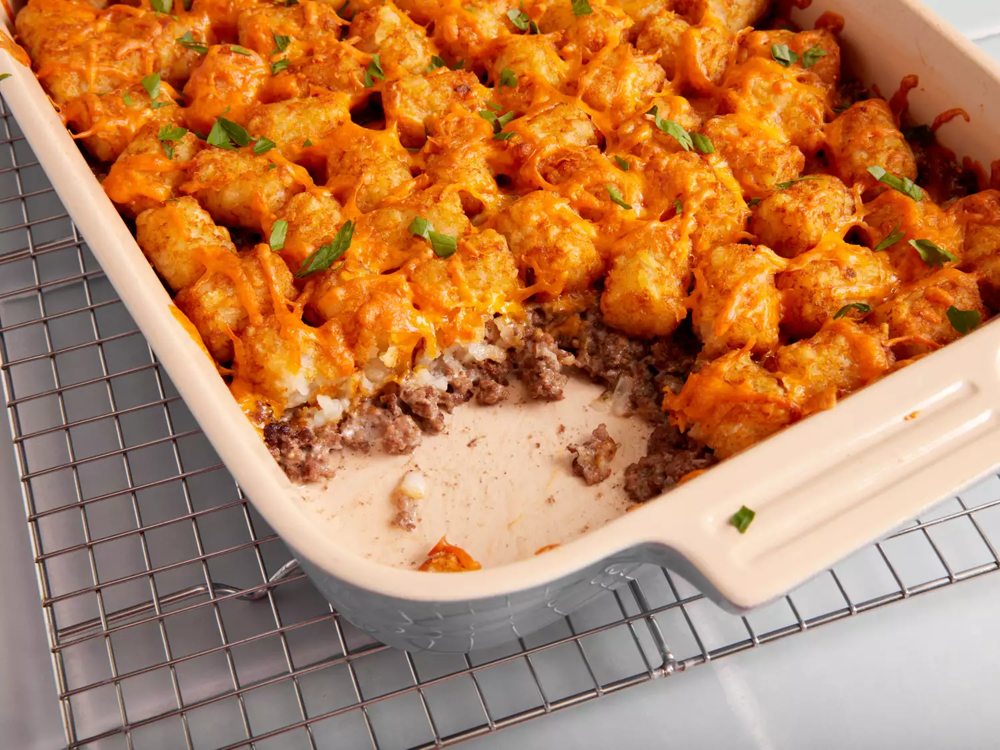

Tater Tot Casserole

DESCRIPTION
This tater tot casserole recipe is quick, easy, and incredibly satisfying. Made with simple and cheap ingredients, it's sure to please everyone at your dinner table.
INGREDIENTS
- Beef: This tater tot casserole starts with ground beef cooked until it's brown and crumbly.
- Canned soup: A can of condensed cream of mushroom soup adds richness, creaminess, and flavor.
- Seasonings: This casserole is simply seasoned with salt and black pepper.
- Fresh herbs: For fresh flavor, chop two tablespoons of parsley and crush one clove of garlic.
- Tater tots: Of course, you'll need frozen tater tots!
- Cheese: Shred your own Cheddar cheese for the most delicious results.
STEPS
- Cook the ground beef, then stir in the soup and seasonings.
- Transfer the beef to a baking dish. Top with tater tots, then the cheese.
- Bake until the tots are golden brown.
HOME